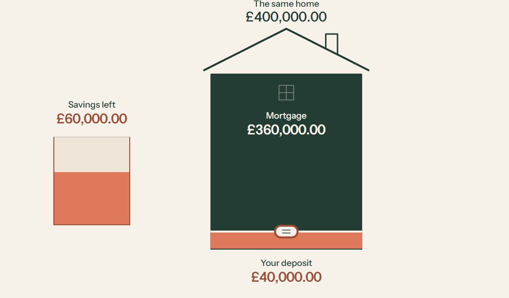
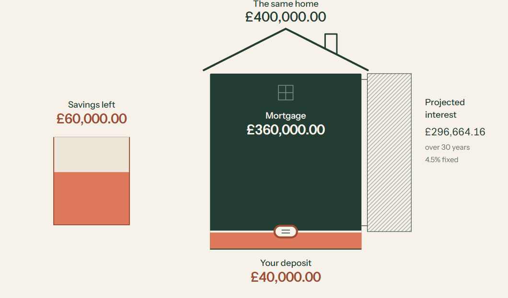
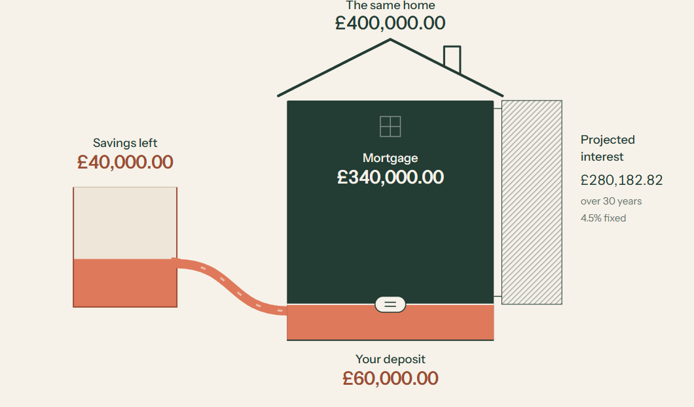
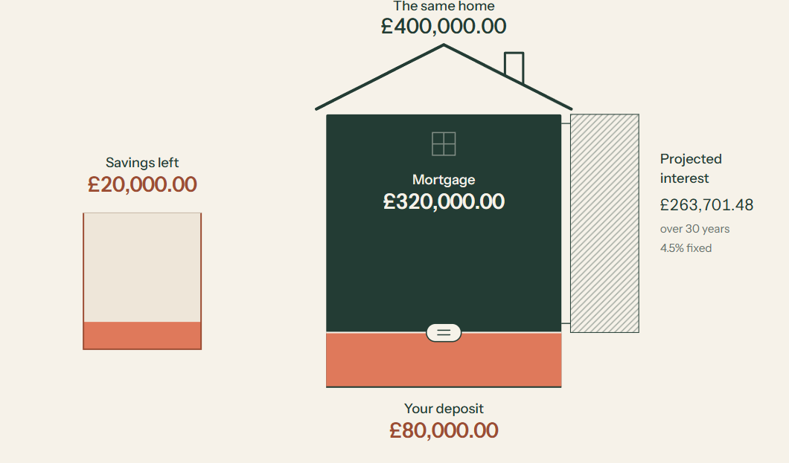
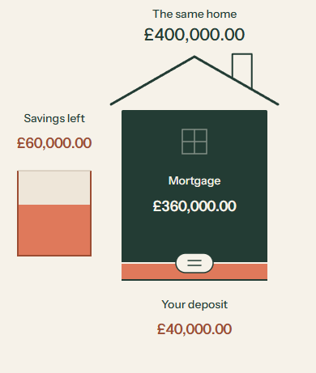
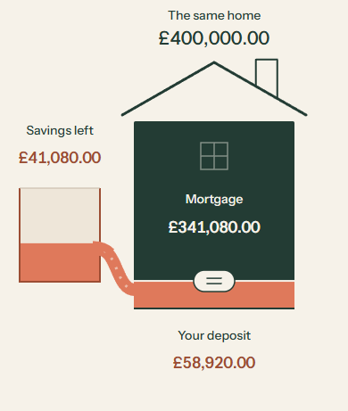
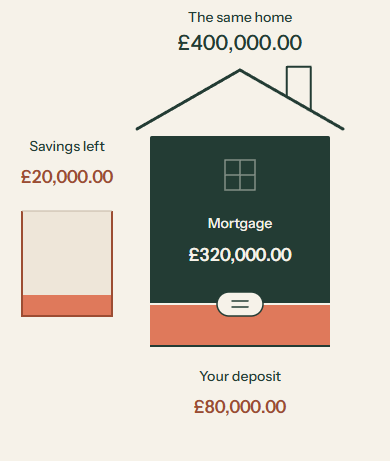
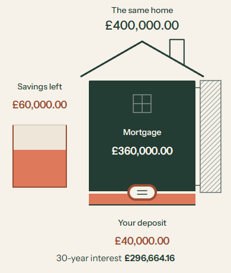
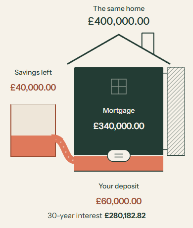
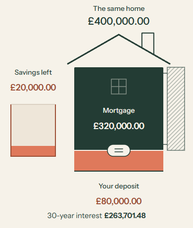

R1-v1 · 29 October 2026 · Owner decision pending
Does the same money
feel like the same money?
Two connected moments: savings replace borrowing, then less borrowing reduces projected interest under an unchanged rate and term.
Watch at normal speed
Actual browser captures, unedited at 1×. Both show the guided transfer, the attached interest reveal and repeated transfer, then direct reversal with a change of direction halfway through.
Desktop
Mobile
Open mobile recording · Chrome touch emulation, 390 × 844; not a physical phone.
One state controls the movement
React keeps the house, savings, stream and interest objects in place. GSAP moves one presentation cursor. That cursor selects an immutable engine-generated row for every label and fill, and controls the stream endpoints and direction. Pointer input kills guided playback and selects the same rows immediately, with no drag easing. Interest has a separate reveal but no independent financial timeline.
The savings container has a quarter of the house body’s capacity and pixel area: £100,000 versus £400,000. Equal transferred amounts therefore occupy equal areas. The roof is an outline outside the price body. The attached hatched region is additional interest cost, outside the purchase, on a separately declared graphical scale.
The fictional example
£400,000.00 home, £100,000.00 available savings after separately funded buying costs. Moving £40,000.00 into the deposit changes deposit £40,000.00 → £80,000.00, mortgage £360,000.00 → £320,000.00 and retained savings £60,000.00 → £20,000.00.
Interest uses a fictional 4.5% nominal annual repayment mortgage, fixed for all 30 years. All 40,001 whole-pound choices are precomputed by the unchanged Python engine with Decimal arithmetic. The browser calculates no mortgage or interest amounts. Every serialized interest total passed an independent 100-digit reference check. These are educational examples, not personal quotes or market-rate claims.
What was checked
Desktop and phone-sized browser checks passed pause/resume, replay, pointer takeover, rapid reversal, outside release, emulated touch, keyboard controls, valid/invalid exact entry, retained SVG identity, reduced motion and interest response. Independent review identified an interrupted reveal and missing interest announcements; both were fixed with regression checks. Axe reported no violations in the tested views. 320px layout and simulated 200% HTML text/control enlargement showed no page overflow.
Browser checks · Capture/frame timing · Decoded video checks · Version manifest
Limits and judgment still needed
- No novice comprehension, physical phone or screen-reader session; no full browser-zoom accessibility certification.
- The author inspected rendered states and decoded samples from the recordings. The independent reviewer inspected source, screenshots and targeted live interactions. Neither claims motion or comprehension acceptance from stills.
- The stream is a connected graphical metaphor, not a fluid simulation. With the caption covered, can you tell where the money came from and what it replaced?
- The proportional house gives a small vertical drag range on a phone. Try whether it feels responsive and satisfying; keyboard and whole-pound exact entry are available.
- The illustration loads a finite lookup table of about 5 MB uncompressed. It supports only this fictional scenario and does not define the eventual calculator’s data contract.
- Only these two moments are implemented. R2 and the calculator wait for your review.
Exact source
Source branch: design/m8-r1-v1
3e894c37f5bb1d0f3bc0cbaef5ac90735e4dd125
Source commit. The exact publication commit is provided in the delivery handoff and source publication record; this immutable folder’s files are bound by SHA-256 hashes.
Key states






















Review decision
ACCEPT / REVISE / TRY ALTERNATIVE / STOP. Can the transfer teach the relationship with the caption covered, and does the interest movement make the second consequence clear?
R0-v1 storyboard · R0-v2 motion studies · Original allocation study